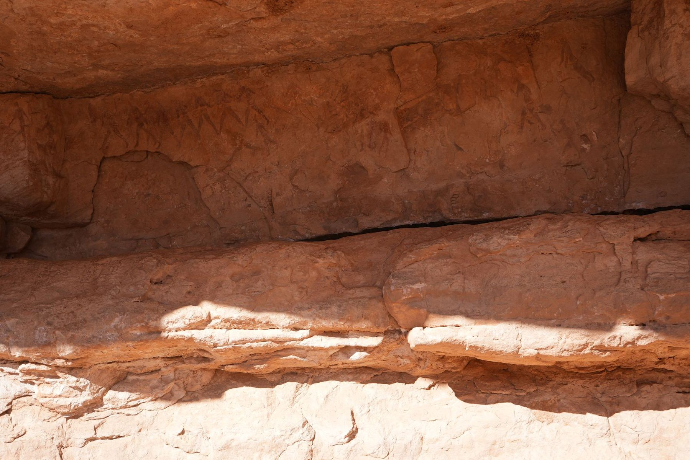

Trek du plateau du Tassili, 8 jours
La montée sur le plateau avec les ânes, les cyprès millénaires de Tamaghit et les grandes fresques de Sefar, Tin Tazarift et Idjabaren.
Le programme
- Jour 1
Djanet et l'Agba de Tafalalt
Accueil à l'aéroport par notre équipe puis transfert en 4x4 vers le pied de l'Agba de Tafalalt pour le premier bivouac sous les falaises du Tassili.
- Jour 2
L'ascension, Tamaghit
Début du trek par l'ascension avec les ânes, déjeuner à Tiffetest et nuit à Tamaghit, au cœur de la vallée des cyprès millénaires.
- Jour 3
In Tinen et Tin Tazarift
De Tamaghit vers les peintures d'In Tinen, découverte du site de Tin Tazarift et nuit en bivouac.
- Jour 4
Sefar Blanc et Sefar Noir
Traversée du Sefar Blanc et du Sefar Noir à la découverte des célèbres peintures rupestres, puis nuit en bivouac.
- Jour 5
Tin Kani et Alaghendemen
De Tirassoutine vers Tin Kani pour le déjeuner, puis cap sur Alaghendemen pour le bivouac.
- Jour 6
Idjabaren
Direction le célèbre site d'Idjabaren pour le déjeuner, découverte des grandes fresques rupestres et nuit en bivouac.
- Jour 7
Descente et la vache qui pleure
Descente par l'Agba d'Aghoum, retour en 4x4 vers Djanet pour la visite du marché et dernier bivouac à Tigherghert, près de la vache qui pleure.
- Jour 8
Retour
Transfert de nuit vers l'aéroport de Djanet pour le vol retour, avec de nombreux beaux souvenirs.



Infos pratiques
Visa, vols, saisonFAQ
Toutes les questionsDestinations
Découvrir les lieuxD'autres circuits
Tous les circuits
Circuit Ihrir, 6 jours
L'oasis d'Ihrir, le canyon d'Issendilène et sa guelta, le marché de Djanet et une rencontre avec les femmes touarègues.
107 000 DA par personneVoir le circuit
Circuit Ihrir, 7 jours
Le circuit Ihrir avec une journée de plus pour Adayk, la célèbre gravure de la vache qui pleure et la sculpture de l'Éléphant.
118 000 DA par personneVoir le circuit
Circuit Tadrart Rouge, 6 jours
El Birdj, Moul Enaga et Tin Merzouga, la plus haute dune d'Algérie. Billets Alger-Djanet et visa compris.
210 000 DA par personneVoir le circuitVotre voyage à Djanet commence par un message
Dites-nous vos dates et vos envies. Mina vous répond personnellement sous 24 heures.